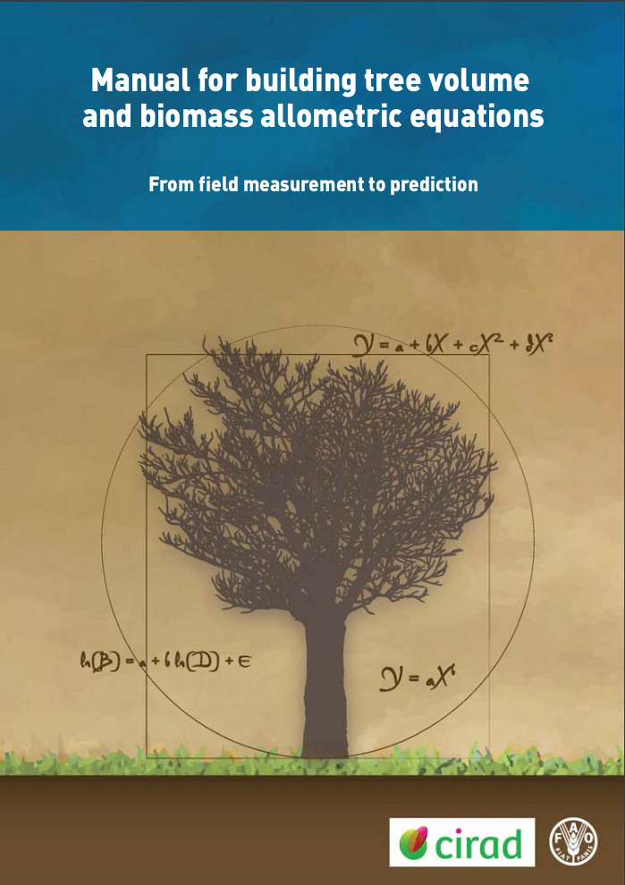

Manual for building tree volume and biomass allometric equations
From field measurement to prediction
August 2012
Cover page

Manual for building tree volume and biomass allometric equations from field measurement to prediction
Nicolas Picard
Département Environnements et Sociétés
Centre de Coopération Internationale en Recherche Agronomique pour le Développement
Laurent Saint-André
UMR Eco&Sols
Centre de Coopération Internationale en Recherche Agronomique pour le Développement &
UR1138 BEF
Institut National de la Recherche Agronomique
Matieu Henry
Forestry Department
Food and Agriculture Organization of the United Nations
August 2012
The designations employed and the presentation of material in this information product do not imply the expression of any opinion whatsoever on the part of the Food and Agriculture Organization of the United Nations (FAO) or the Centre de Coopération Internationale en Recherche Agronomique pour le Développement (CIRAD) concerning the legal status or the stage of development of any country, territory, city or area, or of its authorities, or concerning the delimitation of its frontiers or boundaries. The mention of specific companies or products of manufacturers, whether or not these have been patented, does not imply that these have been endorsed or recommended by FAO or CIRAD in preference to others of a similar nature that are not mentioned.
The views expressed herein are those of the author(s) and do not necessarily represent those of FAO or CIRAD.
E-ISBN 978-92-5-107347-6
All rights reserved. FAO and CIRAD encourage reproduction and dissemination of material in this information product. Non-commercial uses will be authorized free of charge, upon request. Reproduction for resale or other commercial purposes, including educational purposes, may incur fees. Applications for permission to reproduce or disseminate FAO and CIRAD copyright materials, and all other queries concerning rights and licences, should be addressed by e-mail to copyright@fao.org or Chief, Publishing Policy and Support Branch, Office of Knowledge Exchange, Research and Extension, FAO, Viale delle Terme di Caracalla, 00153 Rome (Italy).
Food and Agriculture Organization of the United Nations (FA0)
Viale delle Terme di Caracalla
00153 Rome, Italy
Centre de Coopération Internationale en Recherche Agronomique pour le Développement (CIRAD)
Campus international de Baillarguet
34 398 Montpellier Cedex, France
Photo credit: Stephen Adu-Bredu (photo 3.5), Rémi D’Annunzio (photo 3.4, figure 3.2), Astrid Genet (photos 3.19, 3.20), Matieu Henry (photos 3.9, 3.14), Christophe Jourdan (photos 3.17, 3.18, figure 3.16), Bruno Locatelli (photo 1.2), Claude Nys (photo 3.7, figure 3.2), Régis Peltier (photo 3.10), Jean-François Picard (photo 3.21, figure 3.2), Michaël Rivoire (photos 3.3, 3.5, 3.20, figure 3.2), Laurent Saint-André (photos 1.1, 3.3, 3.4, 3.6, 3.9, 3.17, figure 3.2).
Recommended citation: Picard N., Saint-André L., Henry M. 2012. Manual for building tree volume and biomass allometric equations: from field measurement to prediction. Food and Agricultural Organization of the United Nations, Rome, and Centre de Coopération Internationale en Recherche Agronomique pour le Développement, Montpellier, 215 pp.
© CIRAD et FAO, 2012